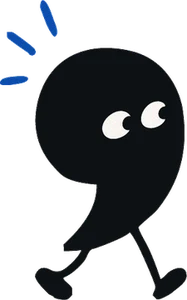

La vida creativa posthumana.
¿Qué le pasa a la creatividad cuando ya no distinguimos un poema escrito por una persona de uno generado por una máquina? Aquí están los textos con los que enfocamos la conversación.
- José Luis · editor general de Perpetuo
- Joanna
- Renata
01Para leer después
Los textos de la mesa.
Cinco lecturas, de la utopía de Anthropic al aceleracionismo de Nick Land. Ábrelas aquí o déjanos tu correo y te mandamos la lista.
02Para seguir la conversación
Las preguntas que nos quedan.
Las que discutimos en la mesa y las que no alcanzamos a responder.

Llévatelas a la sobremesa.
- DiscernirSi tres de las mejores escritoras de la lengua no notaron un texto generado, ¿falló el jurado o la pregunta «¿quién lo escribió?» ya no tiene sentido?
- AutoríaSi un texto nos conmueve, ¿de qué sirve saber quién lo firmó?
- Criterio¿Tener acceso a todas las grandes obras basta para escribir una igual de buena?
- Lo artificialBratton dice que la artificialización es una técnica de la evolución. ¿Lo artificial deja de ser lo falso?
- El futuroUn modelo entrenado con todo lo ya escrito, ¿abre el futuro o lo cancela, como temía Mark Fisher?
- Una gran era¿Se viene una nueva era de gran literatura?
03Recibe Perpetuo

¡Ya eres parte de Perpetuo!
Revisa tu correo: ahí te esperan los textos de hoy y, pronto, el próximo número.